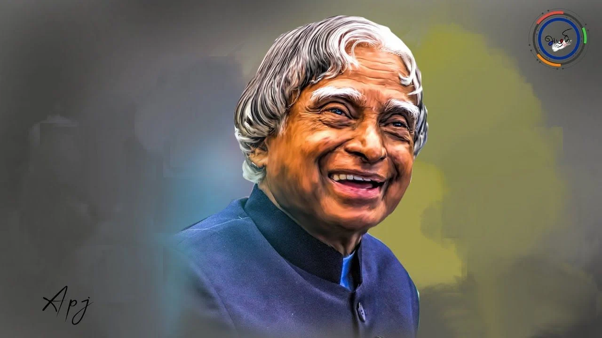

About Dr. APJ Abdul Kalam
Dr. APJ Abdul Kalam, born on October 15, 1931, in Rameswaram, Tamil Nadu, India, was an eminent Indian scientist and politician. He played a pivotal role in India's space and missile development programs.
After completing his education in aerospace engineering, Dr. Kalam joined the Defence Research and Development Organisation (DRDO) and later the Indian Space Research Organisation (ISRO), where he made significant contributions to India's missile technology and space exploration.
In 2002, Dr. Kalam became the 11th President of India, serving until 2007. During his presidency, he focused on promoting education, scientific research, and national development.
Dr. Kalam was known for his simplicity, humility, and dedication to serving the nation. He was a beloved figure who inspired millions, especially the youth, with his vision for a developed and self-reliant India.
Key Achievements
- Played a crucial role in the development of India's first indigenous satellite launch vehicle (SLV-III).
- Led the development of ballistic missile technology, including the Agni and Prithvi missiles.
- Recipient of the Bharat Ratna, India's highest civilian award, in 1997.
- Authored several books, including "Wings of Fire" and "Ignited Minds," inspiring millions with his writings.
- Established the Abdul Kalam Vision India Movement to promote innovation, education, and societal development.
- Continued to mentor and inspire students and young professionals until his passing on July 27, 2015.
Legacy
Dr. APJ Abdul Kalam's legacy continues to inspire people worldwide. He is remembered for his unwavering commitment to education, his vision for a prosperous and technologically advanced India, and his humility and kindness towards everyone he encountered.
His teachings and ideals are celebrated through various initiatives, including the Abdul Kalam Vision India Movement, aimed at fostering innovation, entrepreneurship, and societal development.
Dr. Kalam's life and work serve as a beacon of hope and inspiration for future generations, reminding us to dream big, work hard, and strive for excellence in all endeavors.
Famous Quotes
"Dream, Dream, Dream. Dreams transform into thoughts and thoughts result in action."
"Don't take rest after your first victory because if you fail in second, more lips are waiting to say that your first victory was just luck."
"If you want to shine like a sun, first burn like a sun."